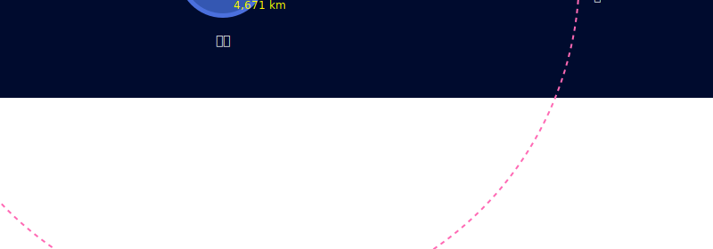

### 🌏地球から🌌宇宙まで！ ### 〜ケプラーの法則で繋がる天体の運動〜  --- ### 自己紹介 <div class="profile-container"> <div class="profile-left" data-markdown> * さめ(meg-ssk) * 🧑💻 フリーランスのソフトウェアエンジニア * 得意分野: * 📸 コンピュータビジョン (画像認識/点群処理) * 🌍 空間情報処理 (GIS/リモートセンシング) * ☁️ クラウドインフラ設計/IaC (AWS, GCP) * [GitHub](https://github.com/s-sasaki-earthsea-wizard) * [YouTube](https://www.youtube.com/@SyotaSasaki-EW) * [Speaker Deck](https://speakerdeck.com/syotasasaki593876) </div> <div class="profile-right">  </div> </div> --- ### 学生時代の専攻 <div class="simple-box" data-markdown> * 💧 水文学 (Hydrology) * 🌟「天文学は天の星を研究する学問」 * 🌏「水文学は地上の水を研究する学問」 * わたしの恩師の言葉です！ </div> <div class="highlight-box"> * 今日のBH集会は、🌏地球のさめと、🌟宇宙のひかりさんのコラボです！ </div> --- ### ケプラーの法則とは？ <div class="container"> <div class="col-box-left" data-markdown> * 天文学者ヨハネス・ケプラーが発見した、惑星の運動に関する3つの法則 * **第一法則: 惑星は楕円軌道を描く** * 今日は第一法則にフォーカスを当てて解説します！ </div> <div class="col-right"> <img src="assets/images/Kepler-portrait.png" alt="Kepler-portrait" height="400px"> </div> </div> --- ### ケプラーの第一法則 <div class="simple-box" data-markdown> * 🌏地球は☀️太陽の周りを楕円軌道で回っている * 🌕月も地球の周りを楕円軌道で回っている </div> <img src="assets/images/Kepler-law.svg" alt="Kepler-law" height="600px"> --- ### 地球と月のバリセンター <div class="simple-box" data-markdown> * 🌏地球と🌕月は互いに引き合いながら共通の重心（バリセンター）を中心に回転する * バリセンターは地球の中心から約4,671 km、地表面からは約1,700 km離れた位置にある * バリセンターから最も遠い位置で「見かけの遠心力」が最も大きくなる </div>  --- ### 潮汐力 <div class="simple-box" data-markdown> * 🌕月の引力とバリセンターを中心とする公転の遠心力の**差**が * 🌕月に近い側では月の引力が強い * 🌕月の反対側ではバリセンターから最も遠いため見かけの遠心力が相対的に大きく働く * **結果として地球上の海水が卵状(潮汐バルジ)に盛り上がる** </div> --- ### 潮汐バルジの形成 <img src="assets/images/tidal-force-earth.svg" alt="tidal-force-detail" height="600px"> --- ### 潮汐力と楕円軌道 <div class="simple-box" data-markdown> * 月の楕円軌道によって、地球と月の距離が変化する * 自転によっても地球上のある地点と月との相対距離が変化する * **潮の満ち引きは、月の楕円軌道と地球の自転の相乗効果によって引き起こされる** </div> --- ### 今回仮定したこと <div class="simple-box" data-markdown> * 地球は球である * 本当の地球は楕円体 * さらに山や谷があってでこぼこしている * 海水は完全流体である * 実際の海水は粘性がある * 実際の海水は粘性で地球の自転に引きずられる * 水飴を塗ったボールを回すと、水飴がボールに引きずられるようなイメージ </div>